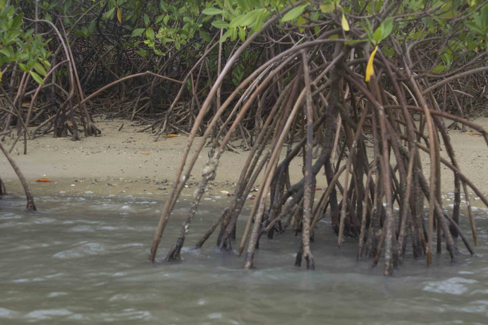
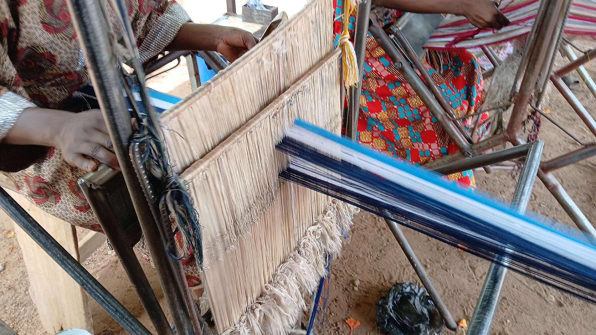
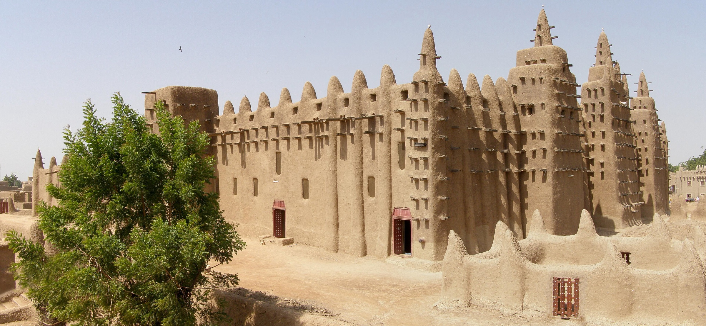
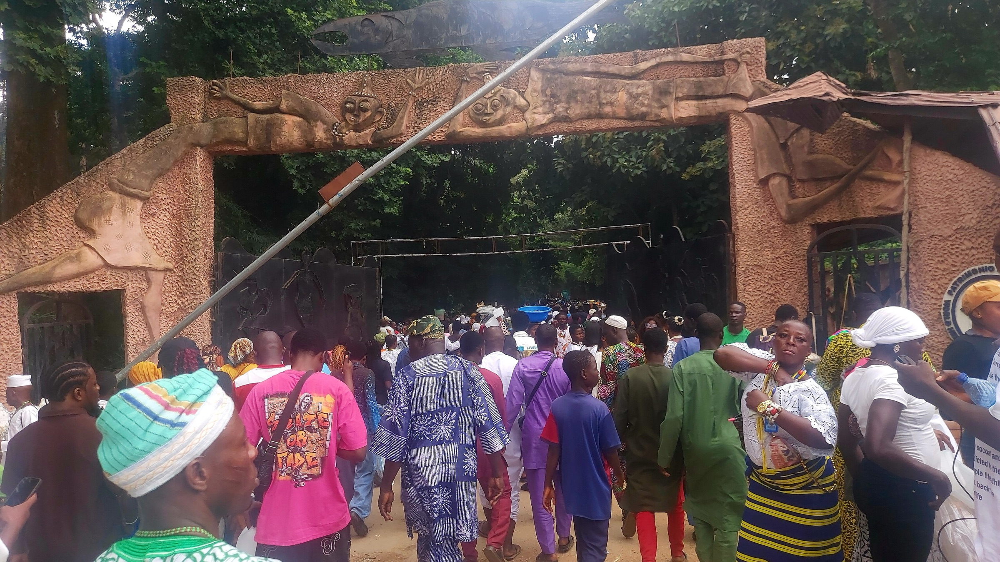
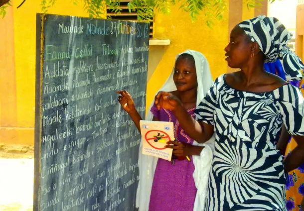
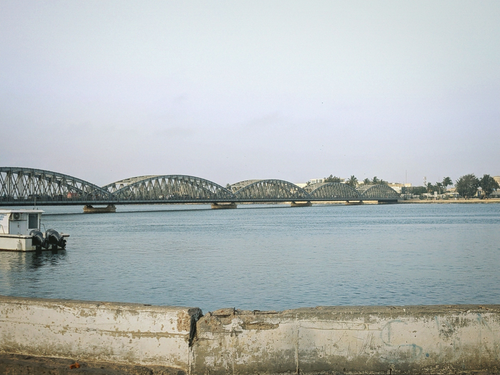
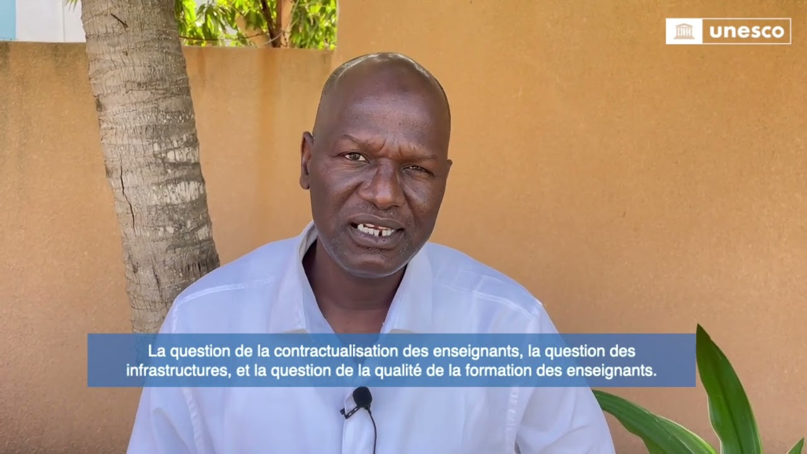
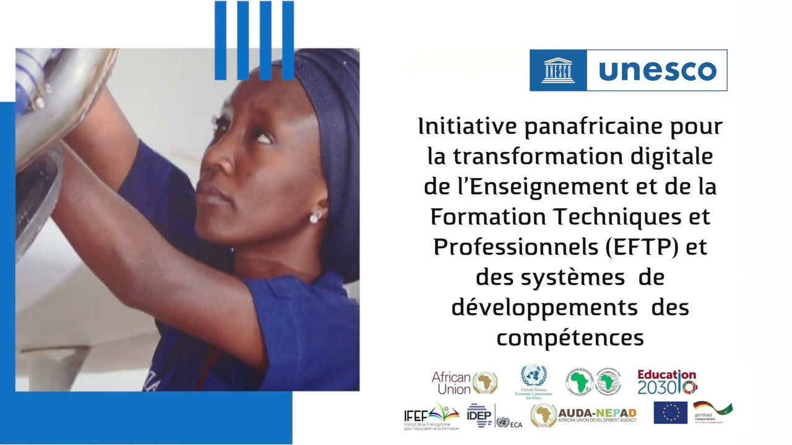

14
Biosphere reserves in the Region

Country profiles, programmes and data for every Member State covered from Dakar.

UNESCO Dakar is the Multisectoral Regional Office for West Africa. From Senegal we work with fifteen countries across every field of UNESCO's mandate.
UNESCO Dakar liaises with the United Nations Development Coordination Office and covers fifteen West African countries beyond the Sahel region, in all of UNESCO's fields of competence.
Benin, Burkina Faso, Cabo Verde, Côte d'Ivoire, Gambia, Ghana, Guinea, Guinea‑Bissau, Liberia, Mali, Niger, Nigeria, Senegal, Sierra Leone and Togo
A region rich in living heritage, protected landscapes and sites of outstanding universal value.

Biosphere reserves in the Region

World Heritage Sites in 12 West African countries

Elements of Intangible Cultural Heritage since 2008
From mud-brick mosques to mangrove deltas, the places, practices and languages UNESCO helps protect across West Africa.

In the Region. Discover the sites.

Elements and safeguarding practices in Africa

Registered by African States and monitored

In the Region

Discover the cities

Heritage documentaries listed on the Register



Ousmane Djibo, National Professional Officer, Niger

Unite4Heritage stories

6 to 8 September 2022

Presentation
Access our publications catalogue and learn more about our actions and work at UNESCO Dakar.
Join UNESCO's work in West Africa as a partner, a fellow, a volunteer or a colleague.